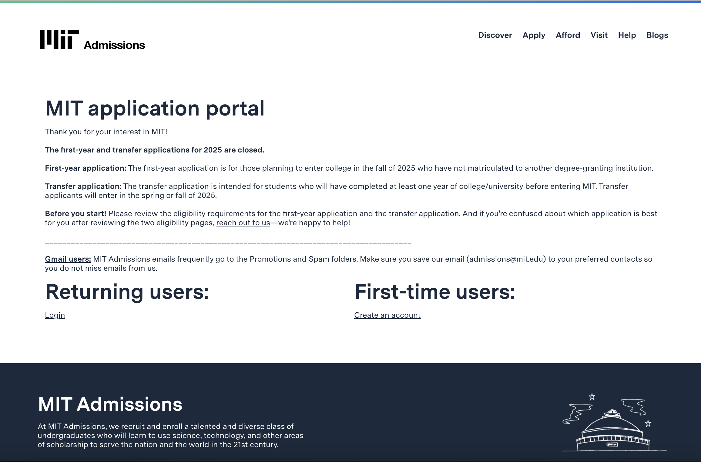

Overview
The MIT Admissions Portal is one of the most important tools for prospective students—but its original design lacked the clarity and responsiveness today’s users expect. For this solo project, I reimagined the experience from the ground up, guided by accessibility, simplicity, and trust. My goal was to create a smoother, more intuitive journey for applicants—especially first-timers navigating an already stressful process.
Part 1: Identifying Usability Problems
Original Website Screenshot
Mobile View


Why I Chose This Site
The MIT Admissions portal plays a major role in shaping students' first impressions—but its interface felt disjointed and unintuitive. For instance, the main "Admissions" link is hidden in the footer with no visual hierarchy. That friction adds up. I chose this project because I wanted to design an interface that meets users where they are, especially on mobile, where most high school students are accessing the site.
Accessibility & Mobile Responsiveness Audit
I ran a full diagnostic using WAVE and Chrome DevTools. The results were telling:
- WAVE: Several alerts and structural issues, including underutilized ARIA tags and poor semantic clarity.
- Mobile View: No adaptive layout—elements were cramped, touch targets were small, and the hierarchy disappeared entirely.
Usability Issues
- Buried Actions: Core actions like “Log In” felt like footnotes instead of focal points.
- Inconsistent Styling: Clickable links blended into body text, missing critical affordances.
- Weak Visual Hierarchy: Typography and spacing didn’t guide the eye—important info got lost in the noise.
Usability Analysis
| Category | Problem | Impact | Solution |
|---|---|---|---|
| Efficiency | Key actions look like passive links instead of calls to action. | Users waste time searching for where to begin—especially stressful in application workflows. | Introduce bold, purposefully placed buttons with clear, scannable labels. |
| Learnability | Mixed link styles create guesswork. | First-time users miss important options or click incorrect areas. | Unify visual language for links and surface navigation clearly. |
| Memorability | Layout shifts dramatically between pages. | Return visits feel unfamiliar—users have to re-learn patterns each time. | Establish reusable UI components and consistent layout scaffolding. |
| Responsiveness | Site breaks on smaller viewports. | Crucial info gets buried or cut off, especially on phones. | Use a mobile-first grid system, responsive images, and scalable text styles. |
Part 2: Visual Redesign
Style Guide
I developed a custom style guide to bring structure, clarity, and calm to the experience—especially for anxious applicants. Typography, spacing, color, and components were standardized to support visual consistency across screen sizes.
Mockups
Desktop (MacBook)
Tablet & Mobile

Key Layout Adjustments
- Created modular layout using flexbox and grid to allow scalability.
- Refined spacing and alignment to improve clarity and rhythm.
- Introduced clear buttons, cards, and CTAs to anchor the experience.
Part 3: Responsive Redesign
The final build, deployed on GitHub Pages, is fully responsive and WAVE-compliant. From phones to desktops, the design flexes beautifully while maintaining integrity. Even with dynamic content and varying screen widths, the layout holds strong and legibility never falters.
Screenshots from the final build:
Laptop

Tablet & Phone
Responsiveness Highlights
- Clean transitions between breakpoints, from 375px up to large monitors.
- All text and UI elements respond well to zoom and accessibility settings.
- Design preserves clarity even with high cognitive load (e.g., form filling).
- Alt text, ARIA support, and color contrast were all carefully considered.
- The final design honors the original structure while offering a smoother path forward.
Reflection
This project reminded me that good design is invisible until it fails. The MIT portal isn’t broken—but it wasn’t working for its most important audience. Through this process, I learned how even small adjustments—clear buttons, clean hierarchy, mobile support—can radically shift how someone feels about a task.
By building everything from scratch, I also deepened my fluency in CSS systems and responsive logic. More than anything, this project helped me understand that accessibility isn’t a feature—it’s a mindset.